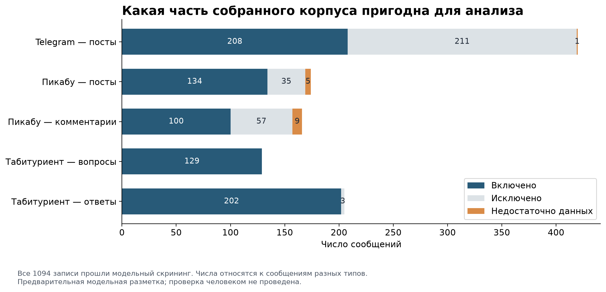
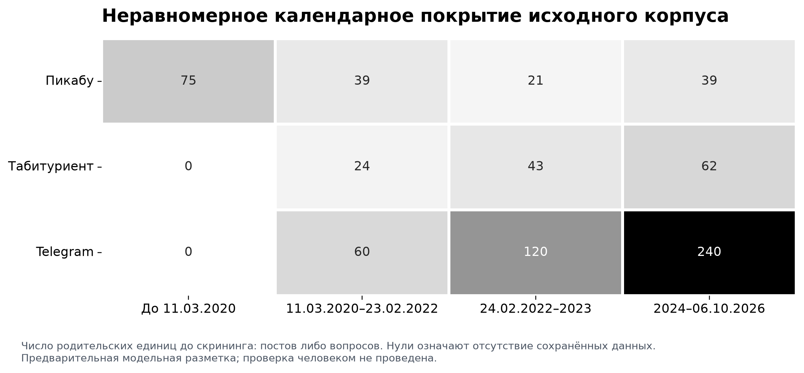
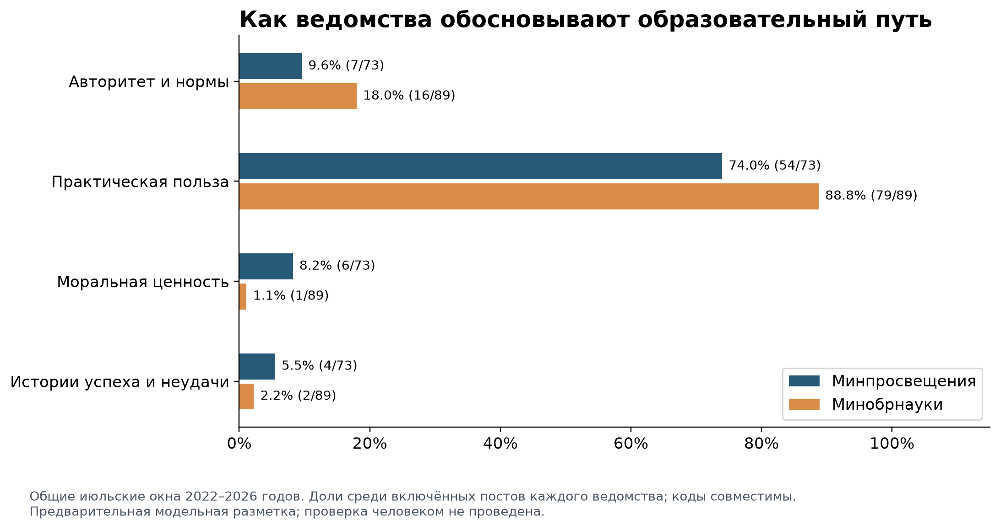
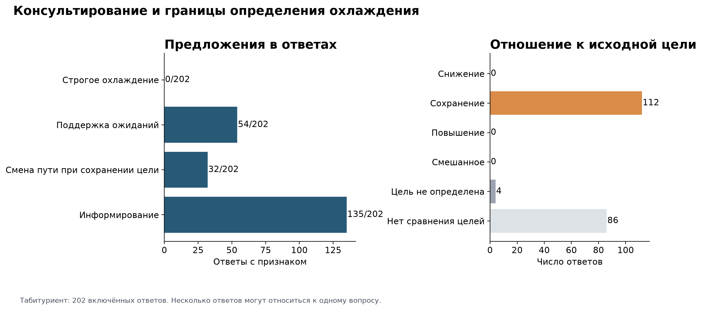
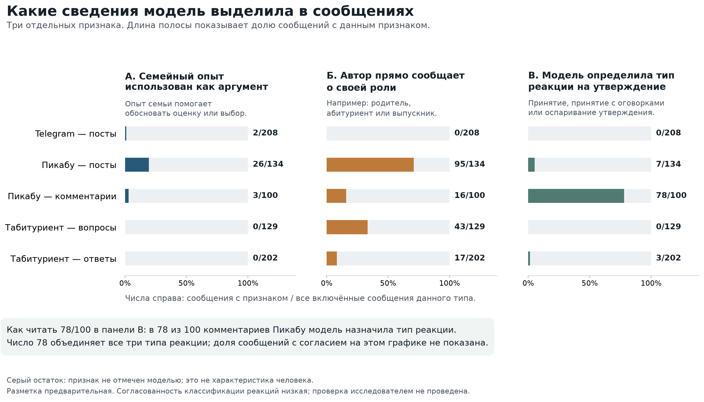
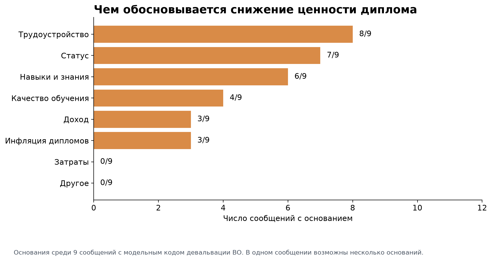
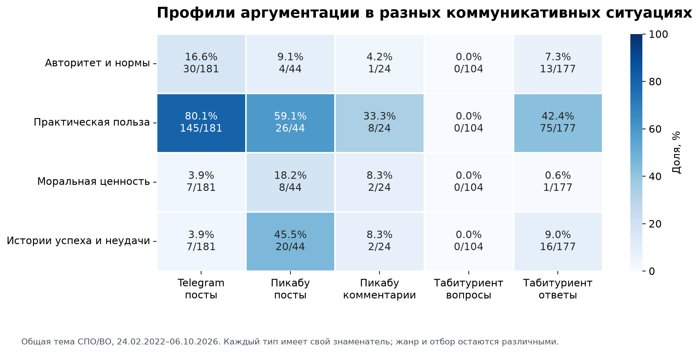

Образовательные траектории, консультирование и ценность диплома: предварительный анализ собранного корпуса
Препринт · 15 октября 2026 года
В сохранённом корпусе обнаружены разные способы обоснования образовательных траекторий, но оснований считать механизм охлаждения доказанным пока нет. Эта версия представляет разведочный анализ автоматической разметки: она показывает доступные случаи, ограничения наблюдения и точки, требующие проверки исследователем. Частоты описывают решения моделей по собранным текстам, а не распространённость установок среди населения.
Разметка исследователем, контроль согласия исследователя и модели, повторная разметка исследователем через две недели и проверка переноса правил на отложенные периоды или организации НЕ проведены. Они перенесены на подготовку основной публикации. Выполненные ниже модельные проверки не заменяют эти процедуры. До завершения этих проверок выводы имеют разведочный статус.
Материал, единицы и границы сравнения
Анализ опирается на METHODOLOGY.md версии 2.2 и готовый литературный обзор. В действующей методологии сформулированы пять исследовательских вопросов ВИ1–ВИ5; они не превращаются здесь в заранее подтверждённые статистические гипотезы. Использован один сохранённый экспорт stage1: 1 094 записи в 723 родительских пакетах — 420 официальных постов Telegram, 174 поста Пикабу с 166 сохранёнными комментариями и 129 вопросов Табитуриента с 205 ответами. Отдельный массив stage1/data/full не присоединялся.
Скрининг включил 773 сообщения. Нерелевантные материалы и записи с недостаточным текстом отделены; наличие охлаждения или критики образования не служило условием включения. Единица количественного подсчёта — сообщение определённого типа; контекстная единица — родительский пост или вопрос с сохранёнными дочерними сообщениями. Несколько ответов одному вопросу не являются независимыми наблюдениями людей. Все таблицы содержат отдельные знаменатели для пяти типов сообщений; совместимые коды могут давать сумму свыше 100%.
| Тип сообщения | Собрано | Включено | Исключено | Недостаточно данных |
|---|---|---|---|---|
| Telegram: посты | 420 | 208 | 211 | 1 |
| Пикабу: посты | 174 | 134 | 35 | 5 |
| Пикабу: комментарии | 166 | 100 | 57 | 9 |
| Табитуриент: вопросы | 129 | 129 | 0 | 0 |
| Табитуриент: ответы | 205 | 202 | 3 | 0 |

Telegram представлен выборками из фиксированных окон, а не непрерывным потоком: 240 постов Минобрнауки и 180 постов Минпросвещения. Для сравнения ведомств использованы только общие июльские окна 2022–2026 годов. В Пикабу сохранён обычно один комментарий к посту: 166 из 174 постов имеют такой комментарий; полных веток обсуждения в данных нет. В Табитуриенте ответы сохранены для 95 из 129 вопросов. 122 вопроса отобраны по случайным ID, ещё 7 — целенаправленно; последним соответствуют 13 записей вместе с ответами. Это не случайная выборка всех российских абитуриентов.
Календарные интервалы следуют методологии: до 11.03.2020; 11.03.2020–23.02.2022; 24.02.2022–31.12.2023; 2024–06.10.2026. Для Пикабу два последних интервала объединены по правилу доступности: в третьем интервале только 15 включённых родительских постов. Для остальных корпусов объединение не понадобилось. Различная длина интервалов, окна отбора и неполные обсуждения не позволяют трактовать частоты как динамику общественного мнения или эффект реформ.

Кодирование и фактические результаты контроля
Предварительный кодификатор v1.1 создан на основе методологии и уточнён на модельном пилоте из 24 контекстных пакетов (45 сообщений). Три агента GPT-6 Luna с уровнем рассуждения medium прочитали тексты по отдельным корпусам и сохранили индивидуальные решения. Тексты передавались с автоматической маскировкой части прямых идентификаторов; такая обработка не гарантирует полной анонимности. В этом публичном изложении пользовательские эпизоды перефразированы. Полные тексты, точные опорные фрагменты и таблица исходных ссылок остаются служебными файлами.
Для дополнительного контроля случайно выделены по 30 пакетов каждого корпуса вне пилота, всего 90 пакетов и 165 сообщений. Их повторно размечал другой агент той же модели без просмотра первой разметки; распределение корпусов между агентами было циклическим. Этот контроль составляет около 15% сообщений и не соответствует предусмотренной методологией человеческой контрольной процедуре с её правилом 20% и минимумом 30 единиц. Общая модель и общий кодификатор могут воспроизводить одинаковые ошибки.
Согласие рассчитано по исходным решениям до содержательного согласования. Скрининг сравнивается на всех контрольных сообщениях, остальные коды — только там, где обе разметки включили сообщение; этот отбор явно отражён числом пар. Неопределимые значения исключены попарно; таблица показывает фактическое число сопоставленных пар. Для номинальных категорий вычислена номинальная альфа Криппендорфа, для степени речевого недовольства — порядковая. Это согласие «модель–модель», не оценка правильности и не согласие человека с моделью. Если обе разметки дают только одну категорию, альфа не определена даже при 100% совпадений. Precision, recall и F1 относительно исследователя не рассчитывались: эталонной разметки нет.
| Тип | Код | Пар | Совпадение | Альфа, модель–модель |
|---|---|---|---|---|
| Telegram: посты | Релевантность | 30 | 86,7% | 0,74 |
| Telegram: посты | Практическая польза | 13 | 53,8% | 0,11 |
| Пикабу: посты | Релевантность | 30 | 86,7% | 0,63 |
| Пикабу: посты | Истории успеха/неудачи | 21 | 66,7% | 0,34 |
| Пикабу: комментарии | Релевантность | 27 | 85,2% | 0,71 |
| Пикабу: комментарии | Прочтение тезиса | 12 | 25,0% | 0,01 |
| Табитуриент: ответы | Практическая польза | 46 | 97,8% | 0,96 |
| Табитуриент: ответы | Поддержка ожиданий | 46 | 82,6% | 0,53 |
| Табитуриент: ответы | Сохранение цели при смене пути | 46 | 89,1% | 0,49 |
| Табитуриент: ответы | Прочтение тезиса | 46 | 39,1% | -0,35 |
Контроль выявил существенную зависимость ряда результатов от кодировщика. Например, альфа практической аргументации в Telegram равна 0,11, поддержки ожиданий в ответах Табитуриента — 0,53, сохранения цели при смене пути — 0,49, прочтения тезиса — -0,35. Следовательно, эти частоты нельзя представлять как надёжно установленные количественные различия. Ниже они оставлены как прозрачное описание предварительной разметки и основание для выбора случаев; содержательные обобщения по нестабильным кодам отложены.
После первичной разметки ведущий ИИ-ассистент рассмотрел пограничные случаи и отдельно зарегистрировал 13 содержательных поправок. Они не заменяют человеческой проверки и не используются для улучшения показателей согласия задним числом. Исходные решения, изменения и сравнение частот до/после сохранены. Отбор подробно обсуждаемых эпизодов выполнен после получения кодов; его нельзя называть предварительной регистрацией качественной выборки.
ВИ1. Темы и обоснования официальной коммуникации
Общие июльские окна содержат 73 включённых поста Минпросвещения и 89 постов Минобрнауки. В первой разметке практическая польза присвоена 54/73 (74,0%) и 79/89 (88,8%) сообщений соответственно. Ссылки на авторитет и нормы — 7/73 (9,6%) и 16/89 (18,0%); моральные обоснования — 6/73 и 1/89; истории успеха или неудачи — 4/73 и 2/89. Тема СПО отмечена в 25/73 и 4/89 постов, ВО — в 52/73 и 89/89. Эти темы могут сочетаться в одном тексте.
Материал позволяет выделить аргументы доступности обучения, профессиональной подготовки и карьерной полезности как направления качественного разбора. Однако слабое модельное согласие по практической аргументации не позволяет утверждать, что одно ведомство достоверно чаще использует этот способ легитимации. Из сравнения также нельзя вывести намерение направить абитуриентов в СПО: для этого необходимо связать конкретное предложение с исходной целью и препятствием в том же эпизоде.

ВИ2. Охлаждение, поддержка и сохранение цели
Строгое охлаждение определялось совместным присутствием явно названной исходной цели, внешнего предложения снизить её из-за препятствия и смягчающего обоснования нового пути. По сохранённой разметке после модельного разбора пограничных эпизодов таких случаев не выделено. Это результат работы с данным корпусом и данным правилом, а не доказательство отсутствия охлаждения в образовательном консультировании: пропуски, короткие ответы и возможные ошибки модели ограничивают обнаружение.
Из 202 включённых ответов Табитуриента информирование отмечено в 135/202 (66,8%), поддержка ожиданий — в 54/202 (26,7%), сохранение цели при смене пути — в 32/202 (15,8%). После модельного пересмотра код сохранения исходной цели g=same имеется у 112 ответов, отсутствие сопоставления целей — у 86, неопределимость отношения к цели — у 4. Ни один окончательный код не фиксирует уверенного снижения цели; в первичной разметке ответов таких меток было четыре. Две относились к критике конкретной программы без предложения изменить цель, ещё две — к описанным ниже пограничным предложениям. Низкое согласие по механизмам ограничивает интерпретацию этих чисел.

В эпизоде TB0071–TB0074 родитель сообщает о низких экзаменационных результатах и спрашивает, куда можно поступить. Ответ предлагает колледж или пересдачу экзамена. Однако исходная цель именно высшего образования не названа, а выражение сожаления не равно содержательному оправданию снижения цели. В эпизоде TB0224–TB0225 на запрос об университетской подготовке для работы с данными предложен аграрный техникум без объяснения. Возможная ирония и отсутствие описанного препятствия не позволяют принять ответ за строгий случай охлаждения. Оба эпизода сохранены как пограничные, без такого кода.
Контрпример автоматическому приравниванию альтернативы к снижению цели даёт пакет TB0289: в ответе TB0294 предложены смежные технические направления и иной способ финансирования с сохранением перспективы работы в IT. Обещания общежития, карьерной помощи или доступности в таких ответах анализируются как речевые аргументы; их фактическая исполнимость не проверялась. Семь ответов имеют исходную метку university_label, но принадлежность автора вузу независимо не удостоверялась. Сравнение стратегий приёмных комиссий вузов и колледжей по этим данным невозможно.
Для описания контекста вопросы разделены на процедурные и смешанные; включённые ответы распределились между ними как 111 и 91. Предложение альтернативы отмечено соответственно в 60/111 (54,1%) и 65/91 (71,4%) ответов. Это структура модельных меток, не проверка различий поведения консультантов. Вопросы и ответы подавались в общем контекстном пакете с инструкцией кодировать вопрос по его собственному тексту; отдельное техническое ослепление вопроса от ответа не применялось. Это дополнительное отклонение от строгой реализации методологии.
ВИ3. Семейный опыт, роли авторов и реакции на утверждения
Рисунок 5 показывает три отдельных признака, которые модель выделяла в сообщениях. Панель А относится к использованию семейного опыта как аргумента; панель Б — к прямо названной роли автора; панель В — к классификации реакции на конкретное утверждение. Длина каждой полосы показывает долю сообщений с соответствующей меткой. Подпись n/N означает число сообщений с меткой из всех включённых сообщений данного типа. Это характеристики текстов и модельных решений; они не описывают состав населения или реальные убеждения всех участников.
Семейный опыт как аргумент отмечен в 26 из 134 постов Пикабу, 3 из 100 комментариев и 2 из 208 официальных постов. Для этого кода требовалось, чтобы опыт семьи помогал обосновать оценку или образовательный выбор. Одного упоминания ребёнка недостаточно, поэтому нули в Табитуриенте не означают отсутствия родителей среди участников. Прямая информация о роли автора отмечена в 95 из 134 постов Пикабу, 16 из 100 комментариев, 43 из 129 вопросов и 17 из 202 ответов Табитуриента. Например, автор мог прямо назвать себя родителем, абитуриентом или выпускником. Роль героя цитируемой истории не переносилась автоматически на автора сообщения.
В панели В учитываются сообщения, которым модель присвоила один из трёх типов реакции на определимое утверждение: принятие, принятие с оговорками или оспаривание. Показатель 78/100 для комментариев Пикабу объединяет все три типа. Он означает, что первая модель классифицировала реакцию в 78 из 100 включённых комментариев; распределение согласия и несогласия внутри этих 78 на рисунке не показано. В остальных 22 комментариях такой тип не присвоен. Это не отдельный код несогласия, равнодушия или непонимания.
Условный пример, не взятый из корпуса: исходное утверждение — «Диплом гарантирует хорошую работу». Ответ «Да, диплом обеспечивает хорошие перспективы» иллюстрирует принятие; «Диплом помогает, но без опыта его недостаточно» — принятие с оговорками; «Диплом сам по себе ничего не гарантирует» — оспаривание. Все три ответа могли бы увеличить число в панели В на одну единицу. Поэтому высокий столбец здесь не означает высокого уровня поддержки исходного утверждения. Само утверждение может принадлежать обычному участнику обсуждения, а не государственному органу.
Классификация реакций пока плохо воспроизводится. В контрольной подвыборке из 12 комментариев Пикабу, включённых обеими моделями, тип реакции совпал лишь в 3 случаях: 25,0% совпадений, альфа Криппендорфа 0,01. Это отдельная проверка качества кодирования; её знаменатель 12 не является знаменателем столбца 78/100. Таким образом, панель В показывает результат первой модельной классификации, но не число независимо подтверждённых интерпретаций. До проверки исследователем она не используется для вывода о доле согласных с образовательной политикой или о соотношении типов реакции.
Образование родителя прямо установлено лишь в одном включённом сообщении; в остальных 772 случаях оно неизвестно. Сравнить родителей с высшим образованием и без него по этим данным невозможно. В кейсе PK0181 автор одновременно описывает родительство, полученное высшее образование и решение освоить ремесленную подготовку. Этот эпизод позволяет рассмотреть СПО как дополнительное профессиональное развитие; он не показывает навязанного снижения цели.

ВИ4. Аргументы девальвации диплома
После модельного разбора выделено 9 сообщений с оценкой снижения ценности диплома ВО: 5 постов Пикабу, 3 ответа Табитуриента и 1 официальный пост. До разбора таких меток было 12. Сравнение заработков профессий, критика работы в системе образования и совет выбрать вуз с удобным графиком исключены из этого строгого признака, когда оценка ценности диплома прямо не выражена. Девять случаев не следует трактовать как точную оценку распространённости девальвации: редкий код требует отдельной проверки всех положительных и возможных пропущенных случаев.
В этих девяти сообщениях представлены трудоустройство (8), символический статус (7), навыки и знания (6), качество обучения (4), доход (3) и избыток дипломированных выпускников (3). Основания совместимы, поэтому их сумма превышает число сообщений. Профиль описывает именно отобранные кейсы; он не позволяет ранжировать причины общественной девальвации образования.

Кейс PK0072 сохраняет значение диплома для формального доступа к работе, одновременно ставя под сомнение его достаточность без практического опыта. В PK0091 противопоставлены реальные умения и формальные документы; критика распространяется на разные уровни подготовки. В PK0285 ценность обучения связывается с собственными усилиями, а наличие документа само по себе не считается гарантией компетентности. Это разные версии критики квалификации, которые нельзя свести к единому отказу от высшего образования.
Официальный кейс TG0145 касается избыточности магистратуры для части карьерных маршрутов при сохранении ценности базового высшего образования. Он не означает общей девальвации ВО и не является наблюдением индивидуального снижения притязаний. Критические ответы TB0105 и TB0246 относятся к конкретным программам или перспективам выпускников. Отсутствие в пользовательском рассказе ссылки на государство не доказывает независимого происхождения аргумента; распространение аргумента между корпусами здесь не установлено.
ВИ5. Сопоставление коммуникативных ситуаций
Для сопоставления оставлены сообщения общей темы СПО/ВО за 24.02.2022–06.10.2026, но типы документов сохранены раздельно: 181 официальный пост, 44 поста и 24 комментария Пикабу, 104 вопроса и 177 ответов Табитуриента. В первичной разметке практические обоснования чаще назначались официальным постам, а истории успеха и неудачи — постам Пикабу. Нулевые метки легитимации у вопросов Табитуриента отражают прежде всего жанр запроса, а не отсутствие ценностей у абитуриентов.
Эта картина служит картой для дальнейшего качественного сравнения, но не выдерживает трактовки как подтверждённое различие площадок: источники различаются отбором, жанром, объёмом текста и качеством кодирования. Особенно существенна низкая воспроизводимость ряда кодов. Ни сходство словаря, ни сходство частот не устанавливают заимствование аргументов или влияние официальной коммуникации на участников.

Устойчивость и границы выводов
В исходном массиве найдено 6 дополнительных точных повторов и 10 дополнительных сообщений в группах близких текстов. Точные повторы определялись по хешу подготовленного содержания внутри одного источника и типа. Близкие тексты сгруппированы по символьным TF–IDF-признакам и косинусному сходству не ниже 0,92 при длине обоих текстов не менее 100 символов; связные группы могут включать цепочки сходства. Это техническая проверка чувствительности, а не доказательство тождества смыслов.
| Вариант расчёта | Включённых сообщений | Строгое охлаждение | Девальвация диплома |
|---|---|---|---|
| Основной набор | 773 | 0 | 9 |
| Без точных повторов | 767 | 0 | 9 |
| Без близких повторов | 763 | 0 | 9 |
| Без целенаправленных вопросов и ответов | 760 | 0 | 9 |
| Telegram: только июль | 749 | 0 | 9 |
| Без отмеченных неоднозначных случаев | 742 | 0 | 9 |
Проверки исключения повторов, целенаправленных записей, октябрьского окна и отмеченных неоднозначных случаев представлены полностью в таблицах. Они оценивают зависимость сохранённых меток от состава корпуса, но не исправляют смысловые ошибки модели. Поэтому стабильность нулевого числа случаев охлаждения при таком пересчёте не повышает автоматически чувствительность его обнаружения. Доверительные интервалы и тесты значимости не применялись: дизайн не даёт основания переносить эти доли на генеральную совокупность.
Для текущего препринта обоснованы описание состава корпуса, явная фиксация недостающих сведений и разбор конкретных пограничных эпизодов. Не обоснованы причинные выводы о реформах, оценка реальной смены притязаний, сравнение приёмных комиссий разных уровней образования, зависимость отношения к СПО от образования родителей и утверждение о подтверждённой надёжности разметки. В основной публикации предстоит провести предусмотренные методологией человеческие проверки; при изменении правил потребуется повторное кодирование затронутых материалов и новая независимая проверка.
Материалы для проверки и воспроизведения
Все исходные CSV сохранены без изменений в локальном рабочем архиве. Публичный набор содержит метаданные, категориальные решения, модельные расхождения, содержательные поправки и контрольные суммы входов. Полные тексты, дословные опорные фрагменты, свободные пояснения к отдельным меткам и соответствия исходным URL в этот набор не включены. Python-пайплайн повторно строит таблицы и графики из опубликованных меток без новых обращений к моделям. В публичном режиме он использует сохранённые решения о точных и близких повторах; проверка цитат и повторное вычисление текстового сходства требуют локального архива и в этом режиме не выполняются. Воспроизводится конкретный сохранённый анализ; повторная генерация разметки моделью может дать другие решения. Для публичного приложения следует использовать отчёт, агрегированные таблицы и графики, а не служебные пользовательские тексты и таблицу соответствия исходным ссылкам.